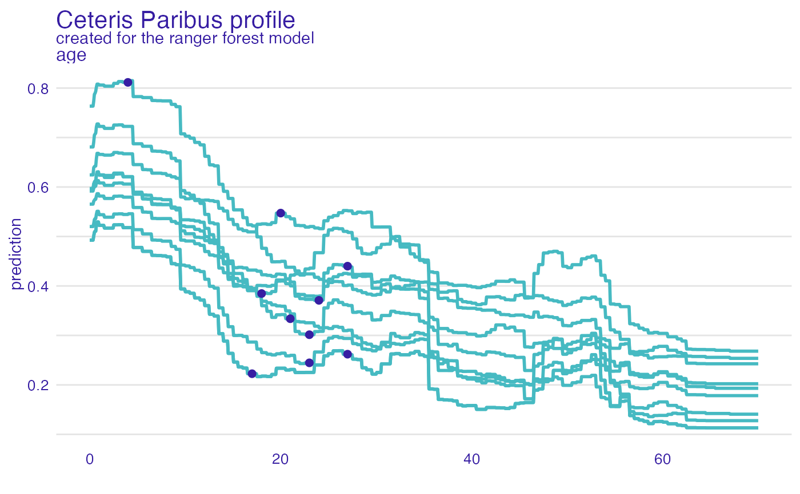
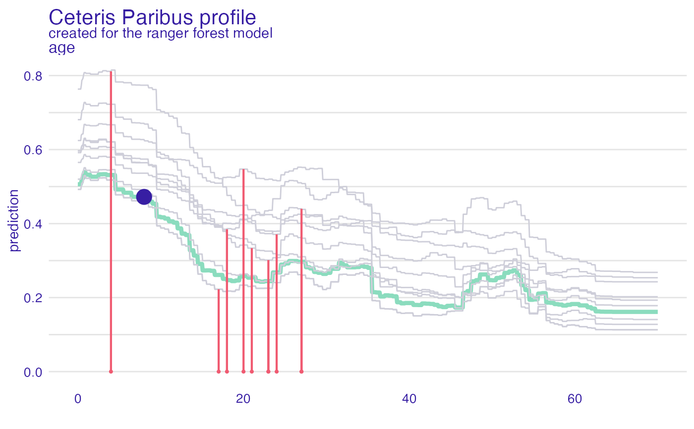

Function show_residuals adds a layer to a plot created with
plot.ceteris_paribus_explainer for selected observations.
Note that the y argument has to be specified in the ceteris_paribus function.
show_residuals(
x,
...,
size = 0.75,
alpha = 1,
color = c(`TRUE` = "#8bdcbe", `FALSE` = "#f05a71"),
variables = NULL
)a ceteris paribus explainer produced with function ceteris_paribus().
Note that y parameter shall be supplied in this function.
other explainers that shall be plotted together
a numeric. Size of lines to be plotted
a numeric between 0 and 1. Opacity of lines
a character. Either name of a color or name of a variable that should be used for coloring
if not NULL then only variables will be presented
a ggplot2 layer
Explanatory Model Analysis. Explore, Explain, and Examine Predictive Models. https://ema.drwhy.ai/
library("DALEX")
library("ingredients")
library("ranger")
johny_d <- data.frame(
class = factor("1st", levels = c("1st", "2nd", "3rd", "deck crew", "engineering crew",
"restaurant staff", "victualling crew")),
gender = factor("male", levels = c("female", "male")),
age = 8,
sibsp = 0,
parch = 0,
fare = 72,
embarked = factor("Southampton", levels = c("Belfast", "Cherbourg", "Queenstown", "Southampton"))
)
# \donttest{
model_titanic_rf <- ranger(survived ~., data = titanic_imputed, probability = TRUE)
explain_titanic_rf <- explain(model_titanic_rf,
data = titanic_imputed[,-8],
y = titanic_imputed[,8],
label = "ranger forest",
verbose = FALSE)
johny_neighbours <- select_neighbours(data = titanic_imputed,
observation = johny_d,
variables = c("age", "gender", "class",
"fare", "sibsp", "parch"),
n = 10)
cp_neighbours <- ceteris_paribus(explain_titanic_rf,
johny_neighbours,
y = johny_neighbours$survived == "yes",
variable_splits = list(age = seq(0,70, length.out = 1000)))
plot(cp_neighbours, variables = "age") +
show_observations(cp_neighbours, variables = "age")

cp_johny <- ceteris_paribus(explain_titanic_rf, johny_d,
variable_splits = list(age = seq(0,70, length.out = 1000)))
plot(cp_johny, variables = "age", size = 1.5, color = "#8bdcbe") +
show_profiles(cp_neighbours, variables = "age", color = "#ceced9") +
show_observations(cp_johny, variables = "age", size = 5, color = "#371ea3") +
show_residuals(cp_neighbours, variables = "age")

# }